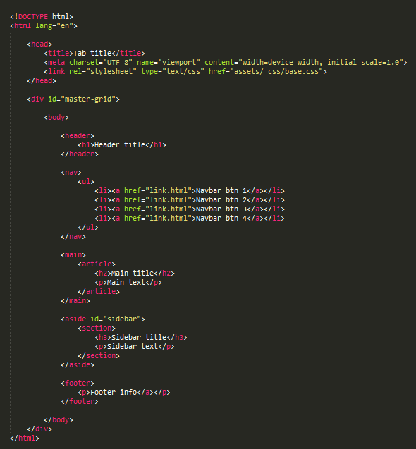

Kode
Koden er en viktig del av å få til god SEO. Her er det viktig å bruke HTML taggene der de skal brukes. Det er vitkig å bruke <nav> for navigasjon, <article> for artikkler og <footer>. Når dette brukes riktig leser google av nettsidene bedre. Søkemotorer bryr seg ikke mye om css, så at det er leselig uten css er viktig. Alle små ting kan hjelpe med SEO, f.eks <alt> tag på bildene.
Her er et simpelt eksempel på HTML oppsett:
